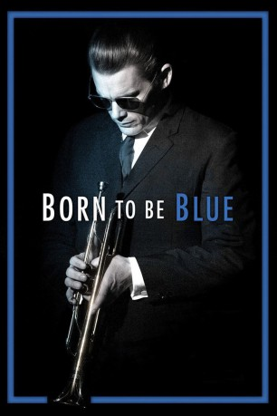

#5363 Born to Be Blue
 
 IMDB-Wertung: 7.0 / 10
IMDB-Wertung: 7.0 / 10  Metascore: 0
Metascore: 0 
Born to be Blue starring Ethan Hawke is a re-imagining of jazz trumpeter Chet Baker's life in the 60's. When Chet stars in a film about himself, a romance heats up with his costar, the enigmatic Jane (Carmen Ejogo). Production is shelved when Chet's past comes back to haunt him and it appears he may never play music again but Jane challenges him to mount a musical comeback against all the odds.
Jahr: 2015
Dauer: 97 Minuten
FSK:
Land: Kanada Studio: UPITonspuren: DD5.1 - ,
Untertitel: Deutsch,
Auflösung: 1080p (1920x1040) Größe: 6983 MB
Genre: Drama, Musik, Liebe, Biographie
Regisseur: Robert Budreau
Drehbuch: Max Brooks
Soundtrack:
Darsteller:
 Ethan Hawke als Chet Baker
Ethan Hawke als Chet Baker Carmen Ejogo als Jane / Elaine
Carmen Ejogo als Jane / Elaine Callum Keith Rennie als Dick Bock
Callum Keith Rennie als Dick Bock Tony Nappo als Officer Reid
Tony Nappo als Officer Reid Stephen McHattie als Chesney Baker Sr.
Stephen McHattie als Chesney Baker Sr.- Janet-Laine Green als Vera Baker
 Dan Lett als Danny Friedman
Dan Lett als Danny Friedman- Kedar Brown als Miles Davis
 Kevin Hanchard als Dizzy Gillespie
Kevin Hanchard als Dizzy Gillespie- Barbara Mamabolo als Janelle
- Charles Officer als Bowling Alley Thug
- Katie Boland als Sarah
 Joe Cobden als Actor Dick
Joe Cobden als Actor Dick- Natassia Halabi als Jenny
 Barbara Eve Harris als Elsie Azuka
Barbara Eve Harris als Elsie Azuka Eugene Clark als Henry Azuka
Eugene Clark als Henry Azuka Kwasi Songui als M.C.
Kwasi Songui als M.C.- Jim Calarco als Bowling Alley Manager
- Daniel Kash als Prothodontist
- Michael Vincent Dagostino als First AD
- Jeremy Cormier als Record Co. Executive , uncredited
- Douglas E. Davidson als Night Club Patron - New York , uncredited
- Drew Davis als Beau , uncredited
- Megan Dawson als Bar Patron , uncredited
- Kevin Hoffman als Record Executive , uncredited
- Adam Moryto als Record Executive , uncredited
- Sandro Spaziani als Musician - Jazz Drummer , uncredited
- Sophia Walker als Real Elaine , uncredited
- Tony Nardi als Nicholas
- Janine Theriault als Florence
- Bruno Rocca als Italian Prison Guard
- Mark Fraser als Prothodontist
- Chip Kean als Sax Steve
- Geoff McCausland als Bassist Peter
- Michael Cleland als Jazz Bar Patron , uncredited
- Evie Moores als Wardrobe Headmistress , uncredited
Datei: X:\2015(A-F)\Born to Be Blue (2015, FSK, 1920x1040).mkv seit 18.01.2017
Festplatte: HD 2015(A-Z)
 Es gibt insgesamt 143 Filme in der Gruppe '2015(A-F)'
Es gibt insgesamt 143 Filme in der Gruppe '2015(A-F)'